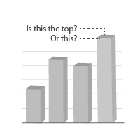
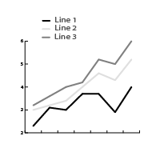
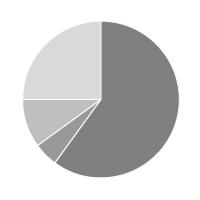
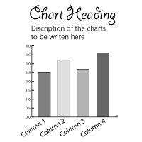
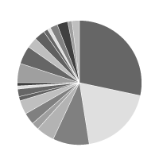
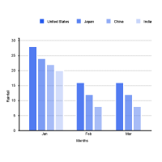
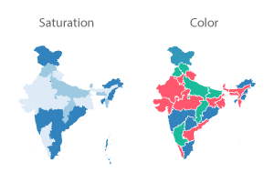
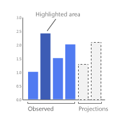

We wanted to reduce the amount of time developers spent to write backend code to model data JSONs for charts. Hence, we categorised charts into genres e.g. one-dimensional, multi-dimensional, maps and other. You can switch across various charts within the same genre without having to change the input data JSON API.
Every visual element that our eyes can differentiate should
be leveraged to communicate data. If it does not communicate
data, it is distracting. If information is presented clearly then the information freely flows to the reader.
3D by itself does not communicate any new data. Moreover, it visually distorts data making it confusing for the reader to draw conclusions.
Legends requires the reader to do the extra work of cross-referencing between the legend and the chart. We have avoided legends until necessary.
Color is a visual encoding and must be used to communicate data. Using too many colors in a chart unnecessarily distracts the reader.
We have avoided confusing typography e.g. stylized fonts, text at an angle (e.g. 90 degree, 45 degree, etc.), bold, text with background, etc.
All slices are of same color
Badly designed Pie
Effective use of colors can help compare and contrast data points effectively.
Too many colors in a chart make it confusing. Hence, we have used graduating shades of the same color to help differentiate between groups.
Some charts support saturation color mode (one color, varying opacity). It allows you to plot numerical data as a heat map.
PykChart uses colors to highlight the key insight or to communicate if a certain data point is a projected / forecasted value.
PykCharts comes with built-in support for Color Brewer palettes, so you can get well-designed color palettes for your maps.
Labeled the line directly
If the line chart becomes cluttered due to multiple data series. Then, you can switch on the multiple_containers_enable mode and it will be shown as panel of line charts.
Charts communicate numbers. If not formatted well, it becomes tough to read or compare numbers, which in turn reduces the effectiveness of the chart.
Reading extremely large numbers is tough. Hence, the charts automatically modify them to accounting mode i.e. 123456 becomes 123,456
While the chart is plotted with the exact data point e.g. 1.8345 the label is rounded off to the next significant digit i.e. 1.9
You can configure to pass any prefix or suffix to numbers. These will then be shown in tooltips and labels. E.g. 123,456 can become $123,456/-